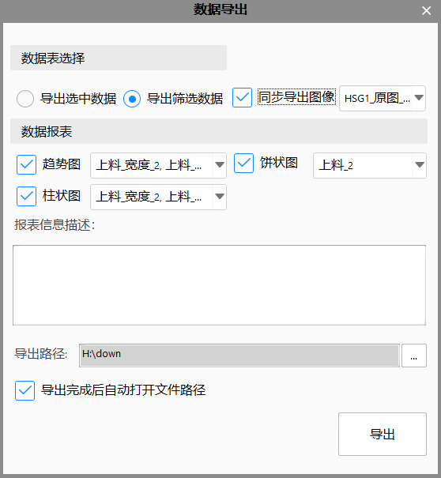

历史数据回看模块的主要作用是集中的查看用户历史生产数据。该模块将数据与图像关联，回看数据的同时能够同时查看该条记录对应的所有历史图像信息; 同时又将数据与生产工艺流程关联，将分散的数据块串联成一条完整的生产数据。其主界面可分为图像回看模式和统计回看模式，分别如图1和图2所示。
数据表：选择数据表，其自动合并表是自动生成的，其包含其他所有表的数据（需具有唯一SN才会被自动合并）。
数据筛选：设置作业名、筛选日期，生产状态（OK\NG）条件，如图3所示；
作业名：筛选出指定作业状态的生产数据；
时间段：筛选出指定时间段的生产数据；
OK ：筛选指定阶段生产结果为成功的数据；
NG ：筛选指定阶段生产结果为失败的数据；
高级筛选：允许用户自定义筛选条件(最多设置30组条件)，该条件与数据筛选选项可同时生效，如图所示；
分组条件设置：用于用户自由组合条件之间的逻辑关系，通过点选左括号与右括号来确定单组逻辑区间。
数据显示区域：
SN搜索：输入SN号点击搜索按钮或回车在数据列表中搜索匹配结果，如果有多个匹配结果，再次搜索即可跳转到下一个匹配项；
模式切换；分为图像回看模式和统计回看模式
图像回看模式：界面视图区域显示当前数据对应的生产图像，缩略图区域显示该阶段所有生产图像；
点击工艺结构树形控件切换阶段数据(仅合并表可切换)；通过点击查询结果列表、视图上下边框上依附的按钮或小键盘上下键切换数据；通过选择缩略图、视图左右边框上依附的按钮或小键盘左右键切换当前阶段的图像；双击视图区域可全屏看图；
统计回看模式：界面视图区域显示当前数据对应的统计结果，缩略图区域显示当前支持的所有统计模式；
点击工艺结构树形控件切换阶段数据(仅合并表可切换)；通过点击查询结果列表、视图上下边框上依附的按钮或小键盘上下键切换数据；通过选择缩略图、视图左右边框上依附的按钮或小键盘左右键切换统计方式（数据表、趋势图、直方图及饼状图），点击详细数据列表切换想要统计的数据（饼状图为一个数据表所有生产结果的统计，不可切换）
数据导出：支持用户导出数据表、对应图像、及统计结果报表，如图4所示。
导出选中数据：导出在查询结果中多选的数据行；
导出筛选数据：导出查询结果列表的所有数据；
同步导出图像：同步导出所选的图像；
趋势图：导出所选数据的趋势统计结果图到报表；
饼状图：导出所选数据的饼状统计结果图到报表；
直方图：导出所选数据的直方统计结果图到报表；

数据清理：支持用户清理数据表及对应图像文件，如图5所示。
清理选中数据：删除在查询结果中多选的数据行；
清理筛选数据：删除查询结果列表的所有数据；
同步清理图像：同步清理所选数据对应的图像；
备份数据表：备份所删除的数据（数据表格式）；